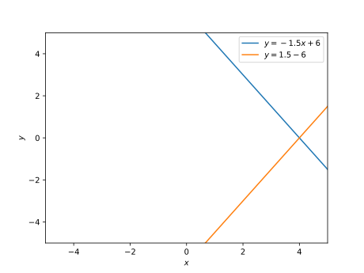
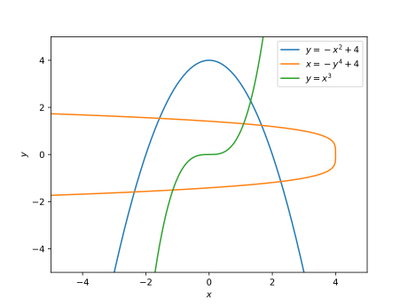

Worksheet 00: Maths revision- solutions#
Only brief solutions are given here. If you have any questions please come along to your tutorial or ask questions in the Class Team.
a. \(1\) b. \(1\) c. \(1\) d. \(4\) e. \(1\) f. \(0.25\) g. \(100\) h. \(-1\) i. \(0.01\) j. \(0.5\) k. \(0.\overline{3}\) l. \(0.\overline{7}\) m. \(\frac{1}{40} = 0.025\) n. \(\frac{21}{9} = 2 + \frac{3}{9} = 2 + \frac{1}{3} = 2.\overline{3}\) o. \(1\) p. \(955.\overline{5}\) q. \(0.093\)
There are many answers for this questions with a good summary on wikipedia: https://en.wikipedia.org/wiki/0.999…
Some of the simplest include that:
\(0.\overline{3} = 1/3\) so \(0.\overline{9} = 3 \times 0.\overline{3} = 3 \times 1/3 = 1\);
- \[\begin{split} \begin{aligned} x & = 0.99\overline{9} \\ 10 x & = 9.99\overline{9} && \mbox{ by multiplying by 10} \\ 10 x & = 9 + 0.99\overline{9} && \mbox{ by splitting off the integer part} \\ 10 x & = 9 + x && \mbox{ by definition of $x$} \\ 9 x & = 9 && \mbox{ by subtracting $x$} \\ x & = 1 && \mbox{ by dividing by 9}. \end{aligned} \end{split}\]
a. a. 1 b. 1 c. 1 d. 1 e. 1 f. 2 g. 1 h. 1 i. 1 j. 1 k. Infinitely many l. Infinitely many m. 2 n. Infinitely many o. 1 p. Infinitely many q. 2
b. k. \(0.3333\) to 4 s.f., \(0.33333\) to 5 s.f., \(0.333333\) to 6 s.f. l. \(0.7778\) to 4 s.f., \(0.77778\) to 5 s.f., \(0.777778\) to 6 s.f. m. \(0.02500\) to 4 s.f., \(0.025000\) to 5 s.f., \(0.0250000\) to 6 s.f. n. \(2.333\) to 4 s.f., \(2.3333\) to 5 s.f, \(2.33333\) to 6 s.f. o. \(1.000\) to 4 s.f., \(1.0000\) to 5 s.f., \(1.00000\) to 6 s.f. p. \(955.6\) to 4 s.f., \(9555.6\) to 6 s.f., \(9555.56\) to 6 s.f.
a. \(2\) – just one solution, although we note that \(-2 \times -2 = 4\) also.
b. \(3\) – just one solution
a. \(8 \times 6 = 48 \, \mathrm{cm}^2\).
b. \(\sqrt{6^2 + 8^2} = \sqrt{36 + 64} = \sqrt{100} = 10\, \mathrm{cm}^2\).
c. \(12 \times 16 = 192\) tiles.
d. \(\mathrm{ceil}(8/w) \times \mathrm{ceil}(6/h)\) tiles covers the rectangle without splitting any tiles. A further exercise would be to work out how many tiles are required if you can split the tiles along straight edges.
a. \(14\)
b. Note that \(3 (0.25)^{1/2} = (3^2 \times 0.25)^{1/2} = (2.25)^{1/2}\).
a. Slope: \(-1.5\), \(y\)-axis intercept: \(6\), yes - can be written as \(y = f(x)\)
b. Slope: \(1.5\), \(y\)-axis intercept: \(-6\), yes - can be written as \(y = f(x)\)
c. Slope: \(0\), \(y\)-axis intercept: \(1.5\), yes- can be written as \(y = f(x)\)
d. Slope: undefined, \(y\)-axis intercept: no, no- cannot be written as \(y = f(x)\).
Write the equation of the straight line as \(y = m x + b\). Substituting the equations for the points gives:
\[\begin{split} \begin{aligned} -1 & = m \times 1 + b \\ 2 & = m \times 7 + b \end{aligned} \end{split}\]Subtracting the first equation from the second gives
\[ 3 = 6 m, \]which gives \(m=\frac{1}{2}\). This can be substituted into the first equation to give \(b=-\frac{3}{2}\).
a. \((4, 0)\) 
b. \((1.5, 1.5)\)

a. is a quadratic equation and can be written as a function \(y = f(x)\) b. is a quartic equation and cannot be written as a function \(y = f(x)\) c. is a cubic equation and can be written as a function \(y = f(x)\).

The problem can be formulated as the system of equations:
\[\begin{split} \begin{aligned} f + s + t & = N \\ s & = 2 t \\ s & = 3 f. \end{aligned} \end{split}\]Solving the system of linear equations gives
\[ f = \frac{2}{11} N, \qquad s = \frac{6}{11} N, \qquad t = \frac{3}{11} N. \]So the fraction of students getting a second class degree is \(\dfrac{6}{11}\).